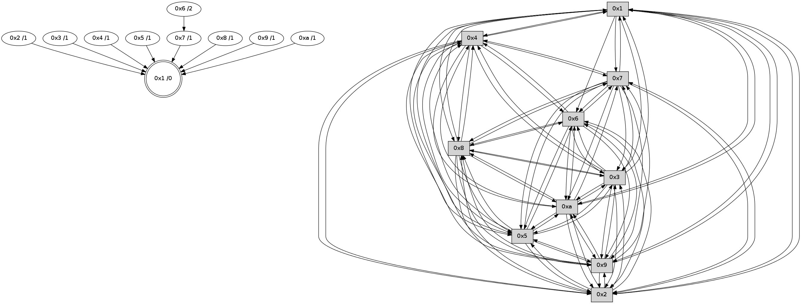

>> << IDX [start] -100 -25 -5 +0 +5 +25 +100 [470.154627085]
 Previous packets
----------------------------------------------------------------------
465.425836 beacon01(faad) #0 coord=01,02,03,04,05,06,07,0a,09,08 cycle=688.0ms assoc
-- color-indic=0 64 6c 3b
465.435819 beacon02(faad) #0 coord=01,02,03,04,05,06,07,0a,09,08 cycle=688.0ms assoc 64 ff 0a
465.445819 beacon03(faad) #0 coord=01,02,03,04,05,06,07,0a,09,08 cycle=688.0ms assoc 64 85 47
465.455819 beacon04(faad) #0 coord=01,02,03,04,05,06,07,0a,09,08 cycle=688.0ms assoc 64 f2 ad
465.465820 beacon05(faad) #0 coord=01,02,03,04,05,06,07,0a,09,08 cycle=688.0ms assoc 64 88 e0
465.475818 beacon06(faad) #0 coord=01,02,03,04,05,06,07,0a,09,08 cycle=688.0ms assoc 64 06 37
465.485820 beacon07(faad) #0 coord=01,02,03,04,05,06,07,0a,09,08 cycle=688.0ms assoc 64 7c 7a
465.495824 beacon0a(faad) #0 coord=01,02,03,04,05,06,07,0a,09,08 cycle=688.0ms assoc 64 0d 71
465.505826 beacon09(faad) #0 coord=01,02,03,04,05,06,07,0a,09,08 cycle=688.0ms assoc 64 83 a6
465.515825 beacon08(faad) #0 coord=01,02,03,04,05,06,07,0a,09,08 cycle=688.0ms assoc 64 f9 eb
465.528309 [Hello(1): seq=209 sym=4,2,9,5,10,3,8,6,7 sysInfo= stat=4:2,0,1,0/2:12,0,1,0/9:10,0,2,0/5:8,0,2,0/10:11,0,1,0/3:0,0,2,0/8:11,0,2,0/6:3,0,1,0/7:9,0,1,0]
465.530941 [Hello(6): seq=300 sym=2,3,5,4,7,9,8,10 sysInfo= stat=2:3,0,2,0/3:6,0,1,0/5:13,0,1,0/4:6,0,1,0/7:5,0,0,0/9:8,0,1,0/8:4,0,1,0/10:1,0,1,0]
465.534301 [Hello(7): seq=300 sym=2,3,5,6,4,8,9,10,1 sysInfo= stat=2:5,0,2,0/3:1,0,1,0/5:5,0,1,0/6:12,0,1,0/4:14,0,1,0/8:7,0,1,0/9:4,0,1,0/10:0,0,1,0/1:11,0,1,0]
----------------------------------------------------------------------
466.213967 beacon01(faad) #0 coord=01,02,03,04,05,06,07,0a,09,08 cycle=688.0ms assoc
-- color-indic=0 64 d0 3e
466.223952 beacon02(faad) #0 coord=01,02,03,04,05,06,07,0a,09,08 cycle=688.0ms assoc 64 43 0f
466.233949 beacon03(faad) #0 coord=01,02,03,04,05,06,07,0a,09,08 cycle=688.0ms assoc 64 39 42
466.243953 beacon04(faad) #0 coord=01,02,03,04,05,06,07,0a,09,08 cycle=688.0ms assoc 64 4e a8
466.253951 beacon05(faad) #0 coord=01,02,03,04,05,06,07,0a,09,08 cycle=688.0ms assoc 64 34 e5
466.263951 beacon06(faad) #0 coord=01,02,03,04,05,06,07,0a,09,08 cycle=688.0ms assoc 64 ba 32
466.273950 beacon07(faad) #0 coord=01,02,03,04,05,06,07,0a,09,08 cycle=688.0ms assoc 64 c0 7f
466.283956 beacon0a(faad) #0 coord=01,02,03,04,05,06,07,0a,09,08 cycle=688.0ms assoc 64 b1 74
466.293956 beacon09(faad) #0 coord=01,02,03,04,05,06,07,0a,09,08 cycle=688.0ms assoc 64 3f a3
466.303957 beacon08(faad) #0 coord=01,02,03,04,05,06,07,0a,09,08 cycle=688.0ms assoc 64 45 ee
466.315757 [Hello(4): seq=301 sym=5,7,6,2,3,9,8,10,1 sysInfo= stat=5:9,0,2,0/7:6,0,1,0/6:11,0,1,0/2:13,0,0,0/3:3,0,1,0/9:14,0,2,0/8:9,0,2,0/10:7,0,0,0/1:14,0,2,0]
466.318429 [Hello(8): seq=244 sym=5,2,3,4,7,6,9,10,1 sysInfo= stat=5:0,0,1,0/2:8,0,0,0/3:8,0,0,0/4:0,0,0,0/7:7,0,1,0/6:15,0,1,0/9:0,0,1,0/10:15,0,0,0/1:7,0,2,0]
466.321121 [STC(1) #0.3 to-color d=0]
466.322444 [Hello(2): seq=298 sym=4,5,7,6,3,9,8,10,1 sysInfo= stat=4:8,0,1,0/5:5,0,2,0/7:2,0,1,0/6:7,0,1,0/3:1,0,1,0/9:10,0,2,0/8:2,0,2,0/10:3,0,1,0/1:12,0,2,0]
466.325625 [Hello(3): seq=301 sym=1,7,6,2,4,8,9,10,5 sysInfo= stat=1:8,0,2,0/7:12,0,1,0/6:9,0,1,0/2:0,0,1,0/4:4,0,1,0/8:0,0,2,0/9:10,0,2,0/10:4,0,1,0/5:4,0,2,0]
466.328497 [Hello(5): seq=301 sym=7,6,4,3,1,9,8,10,2 sysInfo= stat=7:3,0,1,0/6:7,0,1,0/4:15,0,0,0/3:6,0,0,0/1:15,0,2,0/9:0,0,2,0/8:5,0,1,0/10:12,0,0,0/2:1,0,0,0]
466.331090 [Hello(9): seq=244 sym=5,2,3,4,7,6,8,10,1 sysInfo= stat=5:2,0,0,0/2:12,0,0,0/3:8,0,0,0/4:7,0,0,0/7:9,0,1,0/6:3,0,1,0/8:8,0,1,0/10:0,0,0,0/1:7,0,2,0]
466.334271 [Hello(10): seq=233 sym=6,3,2,8,9,5,7,4,1 sysInfo= stat=6:13,0,1,0/3:14,0,1,0/2:7,0,0,0/8:6,0,2,0/9:13,0,2,0/5:4,0,2,0/7:3,0,1,0/4:15,0,1,0/1:1,0,2,0]
----------------------------------------------------------------------
467.002100 beacon01(faad) #0 coord=01,02,03,04,05,06,07,0a,09,08 cycle=688.0ms assoc
-- color-indic=0 64 14 30
467.012082 beacon02(faad) #0 coord=01,02,03,04,05,06,07,0a,09,08 cycle=688.0ms assoc 64 87 01
467.022082 beacon03(faad) #0 coord=01,02,03,04,05,06,07,0a,09,08 cycle=688.0ms assoc 64 fd 4c
467.032083 beacon04(faad) #0 coord=01,02,03,04,05,06,07,0a,09,08 cycle=688.0ms assoc 64 8a a6
467.042083 beacon05(faad) #0 coord=01,02,03,04,05,06,07,0a,09,08 cycle=688.0ms assoc 64 f0 eb
467.052083 beacon06(faad) #0 coord=01,02,03,04,05,06,07,0a,09,08 cycle=688.0ms assoc 64 7e 3c
467.062082 beacon07(faad) #0 coord=01,02,03,04,05,06,07,0a,09,08 cycle=688.0ms assoc 64 04 71
467.072090 beacon0a(faad) #0 coord=01,02,03,04,05,06,07,0a,09,08 cycle=688.0ms assoc 64 75 7a
467.082090 beacon09(faad) #0 coord=01,02,03,04,05,06,07,0a,09,08 cycle=688.0ms assoc 64 fb ad
467.092088 beacon08(faad) #0 coord=01,02,03,04,05,06,07,0a,09,08 cycle=688.0ms assoc 64 81 e0
467.104616 [STC(4)->1 #0.3 to-color d=1]
467.106671 [STC(8)->1 #0.3 to-color d=1]
467.111454 [Hello(6): seq=301 sym=2,3,5,4,7,9,8,10 sysInfo= stat=2:4,0,2,0/3:7,0,1,0/5:14,0,1,0/4:7,0,1,0/7:6,0,0,0/9:9,0,1,0/8:5,0,1,0/10:2,0,1,0]
467.121473 [Hello(7): seq=301 sym=2,3,5,6,4,8,9,10,1 sysInfo= stat=2:6,0,2,0/3:2,0,1,0/5:6,0,1,0/6:12,0,1,0/4:15,0,1,0/8:8,0,1,0/9:5,0,1,0/10:1,0,1,0/1:11,0,2,0]
467.126229 [STC(7)->1 #0.3 to-color d=1]
----------------------------------------------------------------------
467.790232 beacon01(faad) #0 coord=01,02,03,04,05,06,07,0a,09,08 cycle=688.0ms assoc
-- color-indic=0 64 a8 35
467.800214 beacon02(faad) #0 coord=01,02,03,04,05,06,07,0a,09,08 cycle=688.0ms assoc 64 3b 04
467.810216 beacon03(faad) #0 coord=01,02,03,04,05,06,07,0a,09,08 cycle=688.0ms assoc 64 41 49
467.820216 beacon04(faad) #0 coord=01,02,03,04,05,06,07,0a,09,08 cycle=688.0ms assoc 64 36 a3
467.830214 beacon05(faad) #0 coord=01,02,03,04,05,06,07,0a,09,08 cycle=688.0ms assoc 64 4c ee
467.840216 beacon06(faad) #0 coord=01,02,03,04,05,06,07,0a,09,08 cycle=688.0ms assoc 64 c2 39
467.850216 beacon07(faad) #0 coord=01,02,03,04,05,06,07,0a,09,08 cycle=688.0ms assoc 64 b8 74
467.860220 beacon0a(faad) #0 coord=01,02,03,04,05,06,07,0a,09,08 cycle=688.0ms assoc 64 c9 7f
467.870219 beacon09(faad) #0 coord=01,02,03,04,05,06,07,0a,09,08 cycle=688.0ms assoc 64 47 a8
467.880221 beacon08(faad) #0 coord=01,02,03,04,05,06,07,0a,09,08 cycle=688.0ms assoc 64 3d e5
467.891384 [Hello(9): seq=245 sym=5,2,3,4,7,6,8,10,1 sysInfo= stat=5:2,0,0,0/2:12,0,0,0/3:8,0,0,0/4:7,0,0,0/7:10,0,2,0/6:4,0,1,0/8:8,0,2,0/10:1,0,0,0/1:7,0,2,0]
467.893893 [Hello(5): seq=302 sym=7,6,4,3,1,9,8,10,2 sysInfo= stat=7:4,0,2,0/6:8,0,1,0/4:15,0,0,0/3:6,0,0,0/1:15,0,2,0/9:1,0,2,0/8:5,0,2,0/10:13,0,0,0/2:1,0,0,0]
467.897291 [Hello(10): seq=234 sym=6,3,2,8,9,5,7,4,1 sysInfo= stat=6:14,0,1,0/3:14,0,1,0/2:7,0,0,0/8:6,0,3,0/9:13,0,2,0/5:4,0,2,0/7:4,0,2,0/4:15,0,1,0/1:2,0,2,0]
467.900506 [STC(6)->7-.->1 #0.3 to-color d=2]
467.902867 [Hello(2): seq=299 sym=4,5,7,6,3,9,8,10,1 sysInfo= stat=4:8,0,1,0/5:6,0,2,0/7:3,0,2,0/6:8,0,1,0/3:2,0,1,0/9:11,0,2,0/8:2,0,3,0/10:4,0,1,0/1:12,0,2,0]
467.906191 [Hello(3): seq=302 sym=1,7,6,2,4,8,9,10,5 sysInfo= stat=1:9,0,2,0/7:13,0,2,0/6:10,0,1,0/2:0,0,1,0/4:4,0,1,0/8:0,0,3,0/9:11,0,2,0/10:5,0,1,0/5:5,0,2,0]
467.916253 [Hello(4): seq=302 sym=5,7,6,2,3,9,8,10,1 sysInfo= stat=5:10,0,2,0/7:7,0,2,0/6:12,0,1,0/2:14,0,0,0/3:4,0,1,0/9:15,0,2,0/8:10,0,3,0/10:8,0,0,0/1:14,0,3,0]
----------------------------------------------------------------------
468.578365 beacon01(faad) #0 coord=01,02,03,04,05,06,07,0a,09,08 cycle=688.0ms assoc
-- color-indic=0 64 9c 2d
468.588347 beacon02(faad) #0 coord=01,02,03,04,05,06,07,0a,09,08 cycle=688.0ms assoc 64 0f 1c
468.598347 beacon03(faad) #0 coord=01,02,03,04,05,06,07,0a,09,08 cycle=688.0ms assoc 64 75 51
468.608348 beacon04(faad) #0 coord=01,02,03,04,05,06,07,0a,09,08 cycle=688.0ms assoc 64 02 bb
468.618348 beacon05(faad) #0 coord=01,02,03,04,05,06,07,0a,09,08 cycle=688.0ms assoc 64 78 f6
468.628349 beacon06(faad) #0 coord=01,02,03,04,05,06,07,0a,09,08 cycle=688.0ms assoc 64 f6 21
468.638349 beacon07(faad) #0 coord=01,02,03,04,05,06,07,0a,09,08 cycle=688.0ms assoc 64 8c 6c
468.648353 beacon0a(faad) #0 coord=01,02,03,04,05,06,07,0a,09,08 cycle=688.0ms assoc 64 fd 67
468.658352 beacon09(faad) #0 coord=01,02,03,04,05,06,07,0a,09,08 cycle=688.0ms assoc 64 73 b0
468.668354 beacon08(faad) #0 coord=01,02,03,04,05,06,07,0a,09,08 cycle=688.0ms assoc 64 09 fd
468.680127 [Hello(6): seq=302 sym=2,3,5,4,7,9,8,10 sysInfo= stat=2:5,0,2,0/3:8,0,1,0/5:14,0,1,0/4:8,0,1,0/7:7,0,1,0/9:9,0,1,0/8:5,0,1,0/10:2,0,1,0]
468.684156 [Hello(1): seq=211 sym=4,2,9,5,10,3,8,6,7 sysInfo= stat=4:3,0,1,0/2:14,0,1,0/9:12,0,2,0/5:10,0,2,0/10:13,0,1,0/3:2,0,2,0/8:11,0,3,0/6:5,0,2,0/7:11,0,2,0]
468.687935 [Hello(7): seq=302 sym=2,3,5,6,4,8,9,10,1 sysInfo= stat=2:7,0,2,0/3:3,0,1,0/5:7,0,1,0/6:12,0,2,0/4:0,0,1,0/8:8,0,1,0/9:6,0,1,0/10:2,0,1,0/1:11,0,2,0]
----------------------------------------------------------------------
469.366495 beacon01(faad) #0 coord=01,02,03,04,05,06,07,0a,09,08 cycle=688.0ms assoc
-- color-indic=0 64 20 28
469.376478 beacon02(faad) #0 coord=01,02,03,04,05,06,07,0a,09,08 cycle=688.0ms assoc 64 b3 19
469.386478 beacon03(faad) #0 coord=01,02,03,04,05,06,07,0a,09,08 cycle=688.0ms assoc 64 c9 54
469.396480 beacon04(faad) #0 coord=01,02,03,04,05,06,07,0a,09,08 cycle=688.0ms assoc 64 be be
469.406478 beacon05(faad) #0 coord=01,02,03,04,05,06,07,0a,09,08 cycle=688.0ms assoc 64 c4 f3
469.416479 beacon06(faad) #0 coord=01,02,03,04,05,06,07,0a,09,08 cycle=688.0ms assoc 64 4a 24
469.426478 beacon07(faad) #0 coord=01,02,03,04,05,06,07,0a,09,08 cycle=688.0ms assoc 64 30 69
469.436484 beacon0a(faad) #0 coord=01,02,03,04,05,06,07,0a,09,08 cycle=688.0ms assoc 64 41 62
469.446485 beacon09(faad) #0 coord=01,02,03,04,05,06,07,0a,09,08 cycle=688.0ms assoc 64 cf b5
469.456483 beacon08(faad) #0 coord=01,02,03,04,05,06,07,0a,09,08 cycle=688.0ms assoc 64 b5 f8
469.467645 [Hello(8): seq=246 sym=5,2,3,4,7,6,9,10,1 sysInfo= stat=5:1,0,1,0/2:10,0,0,0/3:10,0,0,0/4:1,0,0,0/7:9,0,2,0/6:1,0,2,0/9:1,0,1,0/10:0,0,0,0/1:8,0,3,0]
469.470356 [Hello(3): seq=303 sym=1,7,6,2,4,8,9,10,5 sysInfo= stat=1:10,0,2,0/7:14,0,2,0/6:11,0,1,0/2:0,0,1,0/4:5,0,1,0/8:0,0,3,0/9:11,0,2,0/10:5,0,1,0/5:5,0,2,0]
469.472894 [Hello(9): seq=246 sym=5,2,3,4,7,6,8,10,1 sysInfo= stat=5:3,0,0,0/2:13,0,0,0/3:9,0,0,0/4:8,0,0,0/7:11,0,2,0/6:5,0,2,0/8:9,0,2,0/10:1,0,0,0/1:8,0,2,0]
469.475604 [Hello(4): seq=303 sym=5,7,6,2,3,9,8,10,1 sysInfo= stat=5:10,0,2,0/7:8,0,2,0/6:13,0,1,0/2:14,0,0,0/3:4,0,1,0/9:15,0,2,0/8:10,0,3,0/10:8,0,0,0/1:15,0,3,0]
469.478940 [Hello(2): seq=300 sym=4,5,7,6,3,9,8,10,1 sysInfo= stat=4:9,0,1,0/5:6,0,2,0/7:4,0,2,0/6:9,0,1,0/3:3,0,1,0/9:11,0,2,0/8:2,0,3,0/10:4,0,1,0/1:13,0,2,0]
469.481665 [Hello(10): seq=235 sym=6,3,2,8,9,5,7,4,1 sysInfo= stat=6:15,0,2,0/3:15,0,1,0/2:8,0,0,0/8:6,0,3,0/9:13,0,2,0/5:4,0,2,0/7:5,0,2,0/4:0,0,1,0/1:3,0,2,0]
469.490273 [Hello(5): seq=303 sym=7,6,4,3,1,9,8,10,2 sysInfo= stat=7:5,0,2,0/6:9,0,2,0/4:0,0,0,0/3:7,0,0,0/1:0,0,2,0/9:1,0,2,0/8:6,0,2,0/10:13,0,0,0/2:2,0,0,0]